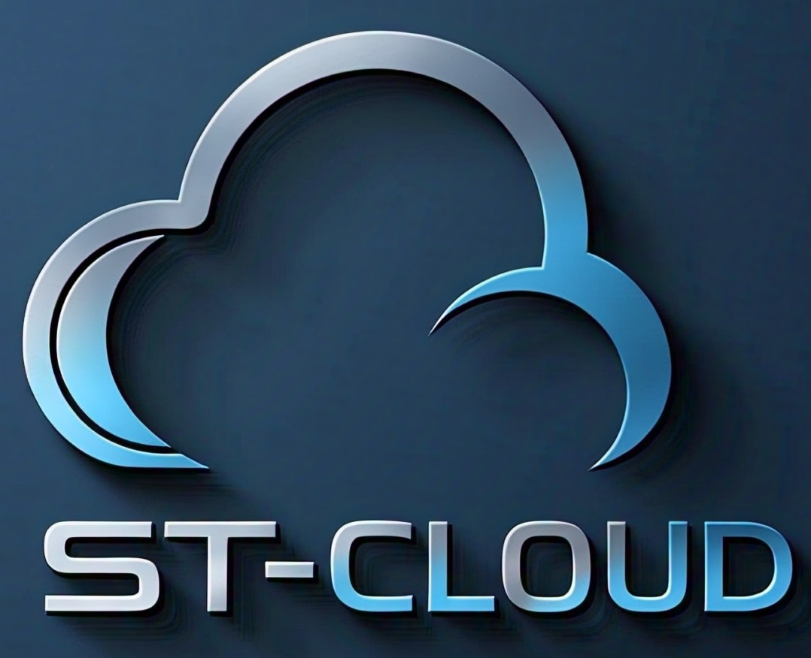

ST-Cloud is SoftTech's innovative cloud computing platform that brings secure, scalable, and high-performance cloud services to individuals and businesses alike. Access your data anytime, anywhere, and collaborate seamlessly with the power of the cloud.
Key features of ST-Cloud include:
With ST-Cloud, you get 10GB of **free cloud storage**, ensuring you have space for your important documents, photos, and videos. Whether you're working on a project or simply storing personal files, ST-Cloud offers an easy-to-use and secure solution.